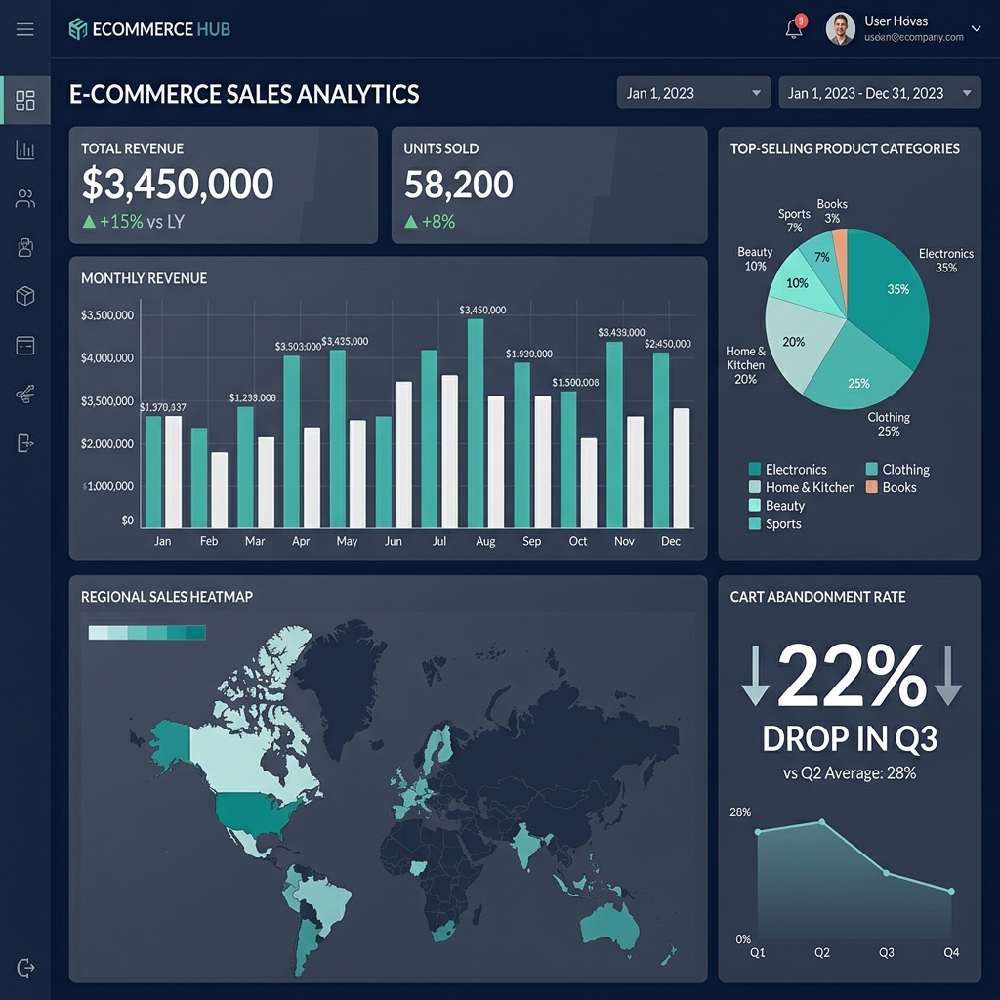
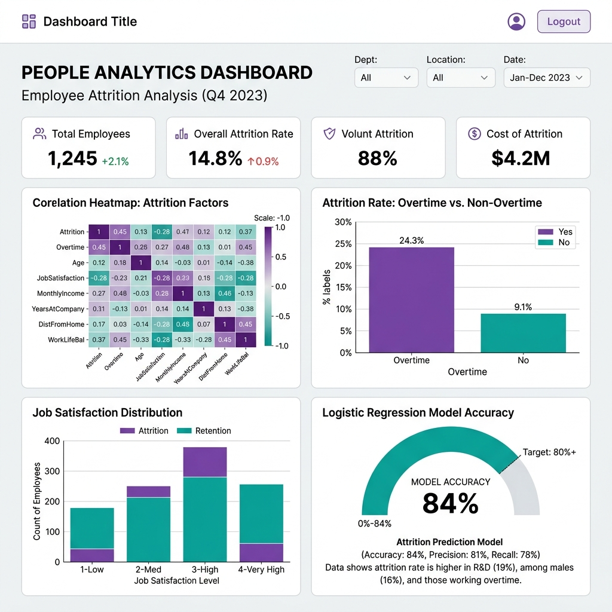
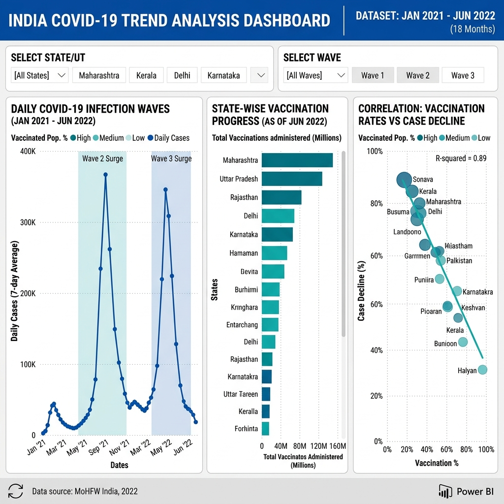

Analyzed 50,000+ rows of transactional data using Pandas to uncover sales trends and customer buying patterns. Built an interactive Tableau dashboard with KPIs including monthly revenue, top-selling categories, and regional sales performance. Identified a 22% revenue dip in Q3 caused by cart abandonment.

Performed EDA on IBM HR Analytics dataset to identify key drivers of employee attrition. Created visualizations revealing that overtime and low job satisfaction were the top two predictors. Built a logistic regression model achieving 84% accuracy in predicting employee churn.

Queried and cleaned COVID-19 state-wise data using SQL, resolving inconsistencies across 30+ data sources. Visualized infection and vaccination trends over 18 months using Power BI with dynamic slicers. Highlighted correlation between vaccination rollouts and case decline.